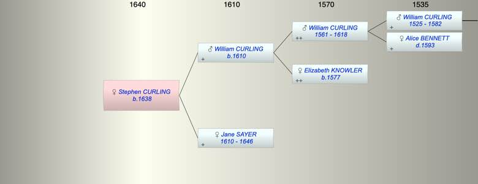

| [Index] |
| Stephen CURLING (1638 - ) |
|  |
| b. 1638 at St Peter, Thanet |
| Parents: |
| William CURLING (1610 - ) |
| Jane SAYER (1610 - 1646) |
| Siblings (5): |
| John CURLING (1634 - ) |
| William CURLING (1636 - ) |
| Gregory CURLING (1640 - ) |
| Thomas CURLING (1643 - ) |
| Elizabeth CURLING (1646 - 1646) |
| Events in Stephen CURLING (1638 - )'s life | |||||
| Date | Age | Event | Place | Notes | Src |
| 1638 | Stephen CURLING was born | St Peter, Thanet | Note 1 | ||
| 1646 | 8 | Death of mother Jane SAYER (aged 36) | St Laurence | Note 2 | |
| Note 1: bap St Peters 6 May 1638 son of William and (Jane - difficult to read) ex FMP PR |
| Note 2: buried St Luarence 23 May 1646 ex FMP PR |
| Created on a Mac™ using iFamily for Mac™ on 8 Oct 2023 |